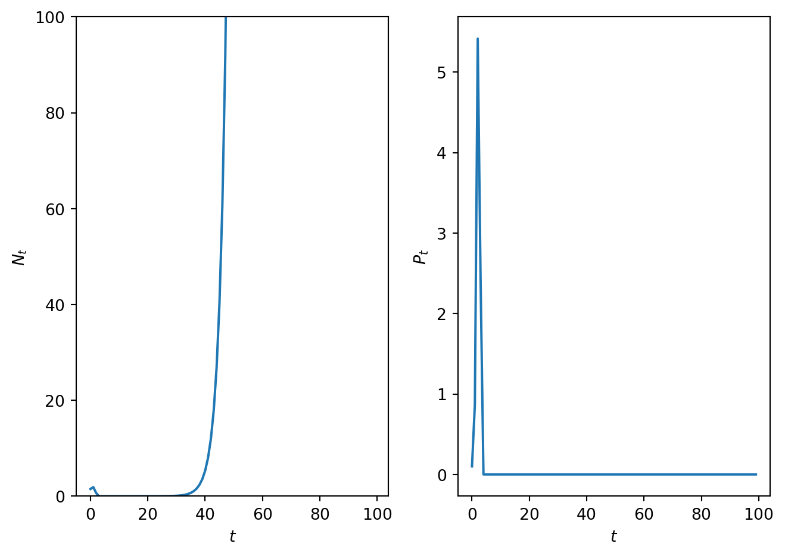

Code
import numpy as np
import matplotlib.pyplot as plt
# This code solve the Nicholson Bailry model
# Discretise time
T=100
t = np.arange(0, T, 1)
# Define parameters
R_0=1.5
C=3.7
a=1.7
# Define initial data
N_0=[1.5, 0.1]
# Define rhs of NIch Bailey model
def rhsNicholsonBailey(x,par):
N=x[0]
P=x[1]
R_0=par[0]
C=par[1]
a=par[2]
# Generate empty vector
g=np.zeros_like(x,dtype=float)
# Encode rhs of N Bailry model
f=np.exp(-a*P)
g[0]=R_0*N*f
g[1]=C*N*(1-f)
return g
# Gen solver for solving Two pop Model
def SolveTwoPopDiff(t,rhs,N_0,par):
# Define solution vectors
N = np.zeros_like(t,dtype=float)
P= np.zeros_like(t,dtype=float)
# Make 0th entry the initial data
N[0]=N_0[0]
P[0]=N_0[1]
# Loop over time
for i in t:
if i>0:
rhs_eval=rhs([N[i-1],P[i-1]],par)
N[i]=rhs_eval[0]
P[i]=rhs_eval[1]
return N,P
# Solve Nicholson Bailey model
N,P=SolveTwoPopDiff(t,rhsNicholsonBailey,N_0,[R_0,C,a])
# Plot results
fig, ax = plt.subplots(1,2)
ax[0].plot(t, N)
ax[0].set_xlabel('$t$')
ax[0].set_ylabel('$N_t$')
ax[0].set_ylim([0,100])
ax[1].plot(t, P)
ax[1].set_xlabel('$t$')
ax[1].set_ylabel('$P_t$')
plt.tight_layout()
plt.show()
